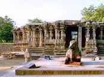

Historical Places in Warangal
Warangal Fort

Warangal Fort is located in Warangal District, Telangana, India. It was the capital city of Kakatiya dynasty and the Musunuri Nayakas. The fort appears to have existed since at least the 12th century when it was the capital of the Kakatiyas. The fort has four ornamental gates, known as Kakatiya Kala Thoranam, and also Orugallu fort that originally formed the entrances to a now ruined great Shiva temple. The Kakatiyan arch has been adopted and officially incorporated into the emblem of Telangana after the bifurcation of Andhra Pradesh. The fort is included in the "tentative list" of UNESCO World Heritage Site and was submitted by the Permanent Delegation of India to UNESCO on 10/09/2010.
Thousand Pillars Temple
The Thousand Pillar Temple or Rudreswara Swamy Temple is a historical Hindu temple located in the city of Hanamakonda, Telangana, India. It is dedicated to Shiva, Vishnu and Surya. The Thousand Pillar Temple, along with the Warangal Fort and the Kakatiya Kala Thoranam were added to the tentative list of UNESCO World Heritage sites.